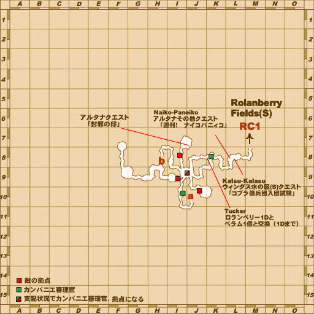
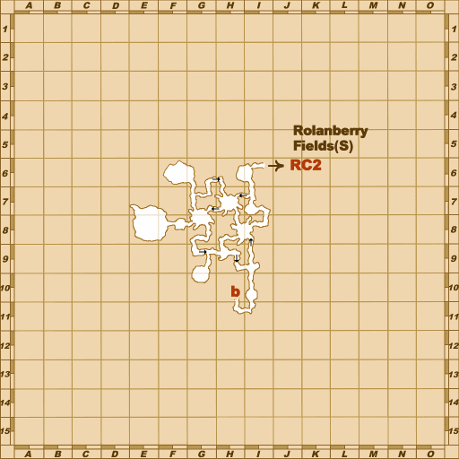
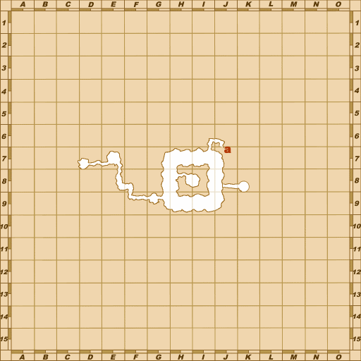
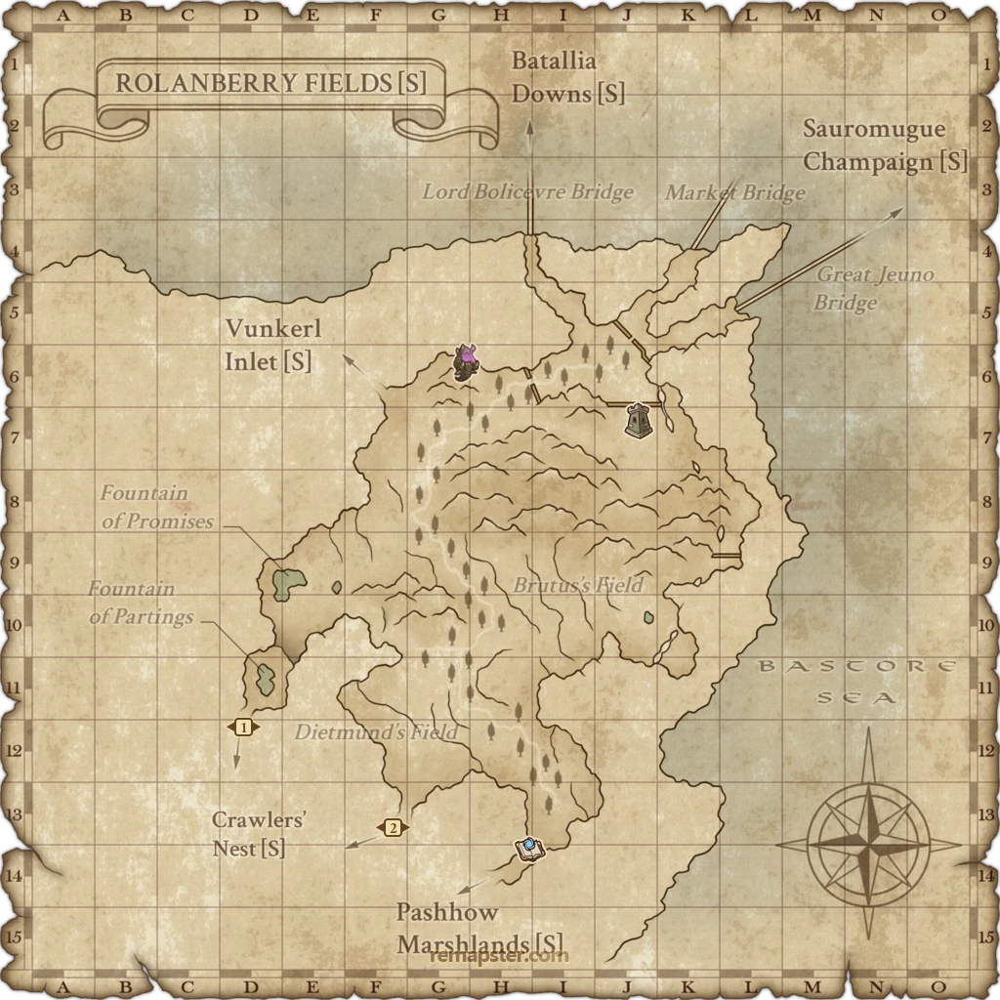

Before you begin
- Complete Cavernous Maws.
- To finish this mission: complete one introductory national chain through Claws of the Griffon, Fires of Discontent, or The Tigress Strikes.
Starting point
Allied recruitment NPC · Garlaige Citadel [S]
Walkthrough
- Obtain a recommendation: Randecque in Garlaige Citadel [S] (I-6) for San d'Oria; Turbulent Storm in The Eldieme Necropolis [S] (J-9) for Bastok; or Kalsu-Kalasu in Crawlers' Nest [S] (L-8) for Windurst.
- Join one past army: Steamed Rams (San d'Oria), The Fighting Fourth (Bastok), or Snake on the Plains (Windurst). Past allegiance is separate from your present nation.
- Finish one introductory story pair: Gifts of the Griffon → Claws of the Griffon; Better Part of Valor → Fires of Discontent; or The Tigress Stirs → The Tigress Strikes.
- Touch a Jeuno-area maw in Batallia Downs [S], Rolanberry Fields [S], or Sauromugue Champaign [S]. An already activated present counterpart also works. Watch Cait Sith's scene.
Battle and progress notes
- One qualifying national chain is sufficient. You do not need to complete all three.
Completion and reward
Lightsworm; Cait Sith story begins.
Area maps
Open a zone below, then select a map to enlarge it. Match the named floors and grid coordinates in the steps; these are reference area maps, not a live position tracker.
Garlaige Citadel (S)


Southern San d'Oria (S)


Bastok Markets (S)


Windurst Waters (S)


The Eldieme Necropolis (S)


Crawlers' Nest (S)






Batallia Downs (S)


Rolanberry Fields (S)



Sauromugue Champaign (S)

Zone guides
- Garlaige Citadel (S)
- Southern San d'Oria (S)
- Bastok Markets (S)
- Windurst Waters (S)
- The Eldieme Necropolis (S)
- Crawlers' Nest (S)
- Batallia Downs (S)
- Rolanberry Fields (S)
- Sauromugue Champaign (S)
References
Steps are an original summary of the linked walkthrough and reviewed source. Other servers’ bonus rewards are not included. How to read requirements, waits and battlefield notes.